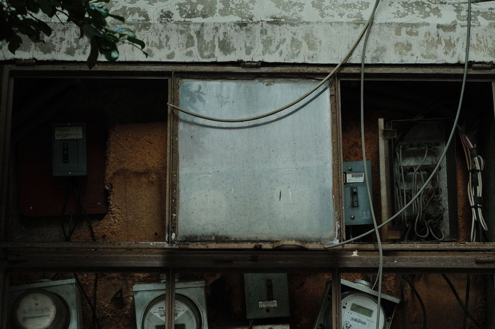

Direito do Consumidor Vol. 1 2026 · 18 de novembro de 2026Todos os informativos

A conta de luz está no meu nome por erro: como resolver?
O consumidor pode pedir o encerramento do contrato e tem direito a comprovante.
A distribuidora não pode exigir o pagamento das dívidas antes de encerrar.
Conta indevida que foi paga pode ser devolvida em dobro.
Entenda melhor 2 min de leitura
O que a regra garante
As regras da agência que fiscaliza a energia elétrica, a ANEEL (Resolução 1.000/2021), dizem que o contrato com a distribuidora termina, entre outros casos, quando o próprio consumidor pede ou quando um novo morador pede a ligação ou a troca de titular.
- A distribuidora deve entregar comprovante do pedido de encerramento, por carta ou meio eletrônico.
- Ela não pode exigir o pagamento ou a negociação de dívidas para encerrar. Pode apenas informar o que está em aberto.
- Na troca de titular, não pode cobrar do novo titular a dívida de outra pessoa, nem fazê-lo assinar termo assumindo essa dívida, nem passar essa dívida para o nome dele no sistema.
O erro que enfraquece o caso
Mudar de casa e não pedir o encerramento nem guardar o comprovante. Enquanto o contrato não é encerrado, a distribuidora tende a manter as contas no nome do antigo titular. Se o nome foi usado sem pedido, registre a reclamação e, se for o caso, um boletim de ocorrência.
O que fazer agora
- Peça o encerramento ou a correção nos canais da distribuidora e guarde o protocolo.
- Junte provas de que não mora mais no imóvel: contrato de venda ou de aluguel, entrega das chaves, comprovante do novo endereço.
- Sem solução, recorra à ouvidoria da distribuidora e depois à ANEEL.
- Se o nome foi negativado por dívida que não é sua, é possível pedir na Justiça a retirada e analisar a indenização.
Perguntas frequentes
Posso encerrar o contrato mesmo com contas atrasadas?
Sim. A distribuidora não pode exigir o pagamento ou a negociação das dívidas para encerrar (Resolução ANEEL 1.000/2021, art. 140, I e § 6º).
O novo morador pode ser obrigado a pagar a dívida do antigo?
Não, em regra. A distribuidora não pode exigir dívida de outra pessoa para trocar o titular, salvo quando uma empresa sucede outra (Resolução ANEEL 1.000/2021, art. 346, I a III e § 1º).
Paguei conta que não era minha. Recebo de volta?
Quem paga cobrança indevida tem direito à devolução em dobro do que pagou a mais, salvo engano justificável (CDC, art. 42, parágrafo único).
Meu nome foi negativado por essa dívida. O que fazer?
É possível pedir na Justiça a retirada do nome e analisar o pedido de indenização.
- Resolução Normativa ANEEL 1.000/2021, arts. 138, 140, I e II e §§ 5º e 6º, e 346
- CDC, arts. 42, parágrafo único, e 43, § 2º
Publicado em . Texto informativo. Cada situação depende de análise própria, com base nos documentos e nos fatos do caso.

Filipe Ferreira
Filipe Ferreira Santana, advogado, OAB/ES 37.159. Pós-graduação em Direito de Família em curso na FMP. Filiado ao IBDFAM.
O escritório Ferreira Advogados atua em Direito de Família, Sucessões, Direito Trabalhista, Direito Civil, Direito do Consumidor e Direito Previdenciário, com atendimento presencial em Linhares/ES e on-line.
Para tirar dúvidas sobre este assunto ou agendar um atendimento, o contato é pelo WhatsApp.
Leia também

Comprei frango sem pele e veio com pele: o que o consumidor pode exigir?
Troca, dinheiro de volta ou desconto.
Fui multado por violação do hidrômetro sem prova: posso contestar?
Sim. Sem defesa, a multa é frágil.